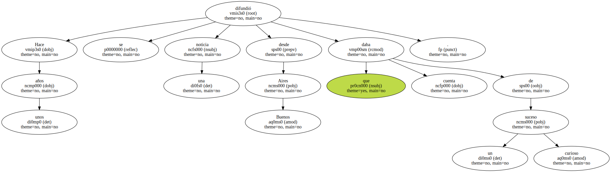
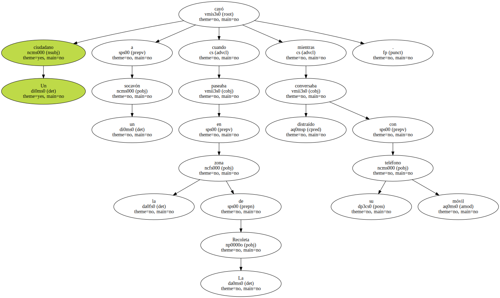
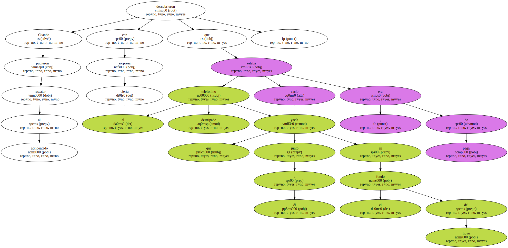
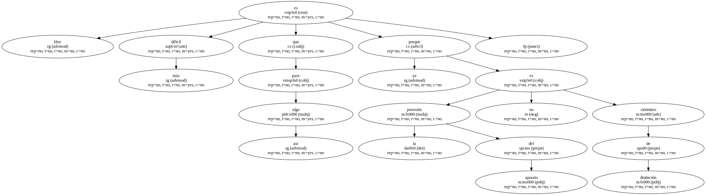
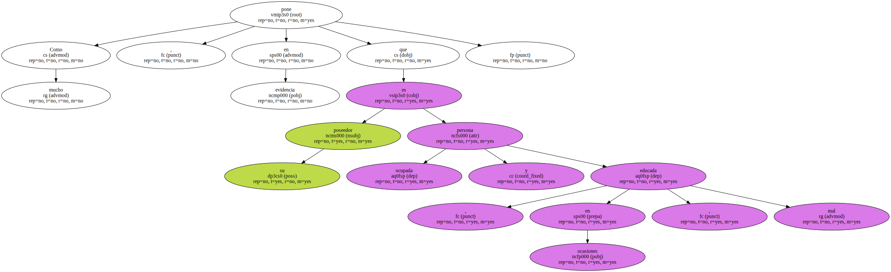
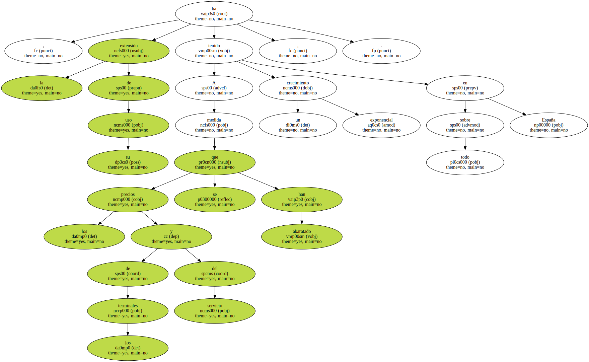
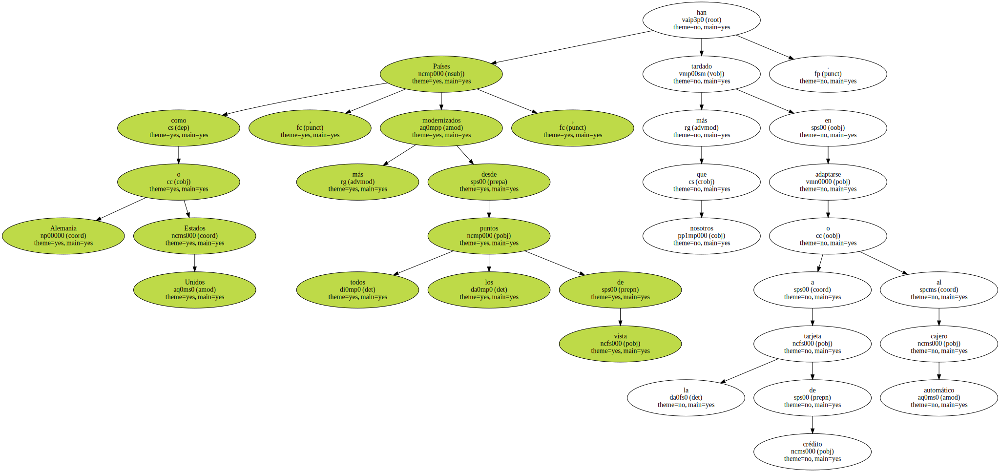
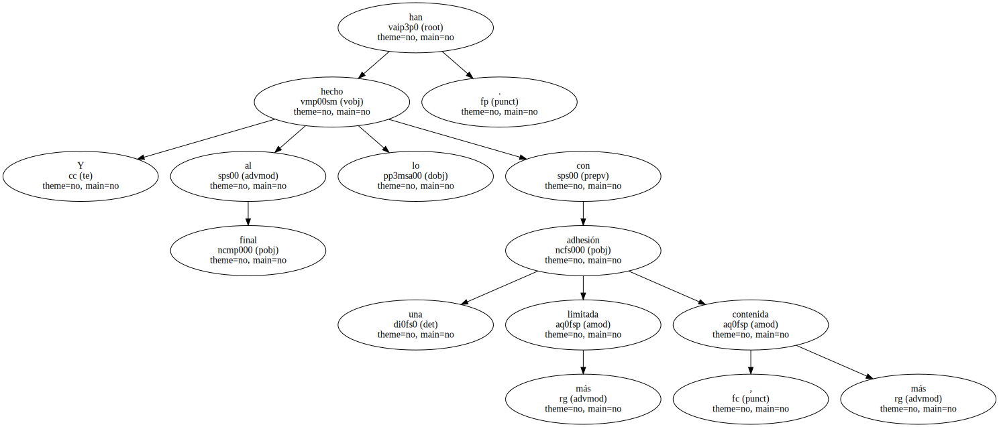
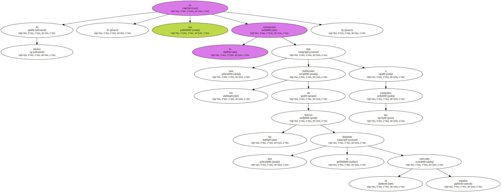

Hace unos años se difundió una noticia desde Buenos Aires que daba cuenta de un suceso curioso.
Un ciudadano cayó a un socavón cuando paseaba en la zona de La Recoleta mientras conversaba distraído con su teléfono móvil.
Cuando pudieron rescatar al accidentado descubrieron con cierta sorpresa que el telefonino destripado que yacía junto a él en el fondo del hoyo estaba vacío , era de pega.
Hoy es más difícil que pase algo así porque la posesión del aparato ya no es sinónimo de distinción.
Como mucho , pone en evidencia que su poseedor es persona ocupada y , en ocasiones , mal educada.
A medida que los precios de los terminales y del servicio se han abaratado , la extensión de su uso ha tenido un crecimiento exponencial , sobre todo en España.
Alguien debería estudiar el fenómeno , que es ampliable a otros casos de asimilación popular de adelantos tecnológicos que aquí han tenido una adaptación más rápida que en la mayoría.

Países como Alemania o Estados Unidos , más modernizados desde todos los puntos de vista , han tardado más que nosotros en adaptarse a la tarjeta de crédito o al cajero automático.
Y al final lo han hecho con una adhesión más limitada , más contenida.
Es posible que sea la posibilidad de aumentar la libertad de movimientos o de acentuar la individualidad de los ciudadanos que ofrecen estos inventos lo que los hace tan deseados.
Al menos , ésa es la orientación que los publicistas de las marcas que se disputan el mercado español dan a sus campañas.
